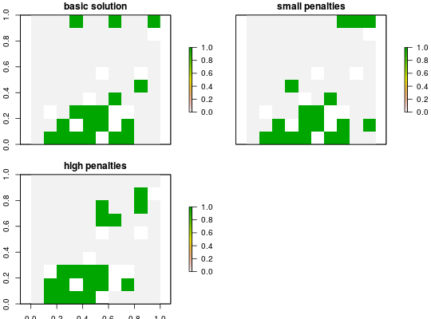

Add penalties to a conservation problem to favor solutions that clump selected planning units together into contiguous reserves.
add_boundary_penalties(x, penalty, edge_factor, boundary_data = NULL)
ConservationProblem-class object.numeric penalty for exposed edges. This
is equivalent to the
http://marxan.net/downloads/uq_marxan_web_2/module2.html
parameter in http://marxan.net.numeric proportion to scale edges that do
not have any neighboring planning units. For example, an edge factor
of 0.5 is commonly used for planning units along the coast line.matrix, Matrix, or
data.frame object showing the shared boundary lengths
between planning units. If boundary_data is a matrix then
each row and column denote a planning unit and cell values
represent their shared boundary. If boundary_data is
data.frame then it must have the columns "id1",
"id2", and "boundary", where each row shows
the shared boundary between two planning units (as per the standard
Marxan input format). This argument is required
if the planning units in x are stored in a data.frame
object. Otherwise, it is optional and the boundary data will be
automatically calculated. Note that the boundary_data must be
denote symmetric relationships between planning units. If
assymetric relaionships are required, use the
add_connectivity_penalties function.ConservationProblem-class object.
# create basic problem p1 <- problem(sim_pu_raster, sim_features) %>% add_min_set_objective() %>% add_relative_targets(0.2) %>% add_default_solver(time_limit=5) # create problem with low boundary penalties p2 <- p1 %>% add_boundary_penalties(10000, 1) # create problem with high boundary penalties # receive half the penalty as inner edges p3 <- p1 %>% add_boundary_penalties(10000000, 1) # solve problems s <- stack(solve(p1), solve(p2), solve(p3))#> Optimize a model with 5 rows, 90 columns and 450 nonzeros #> Variable types: 0 continuous, 90 integer (90 binary) #> Coefficient statistics: #> Matrix range [2e-01, 9e-01] #> Objective range [2e+02, 2e+02] #> Bounds range [1e+00, 1e+00] #> RHS range [6e+00, 1e+01] #> Found heuristic solution: objective 4129.88 #> Presolve time: 0.00s #> Presolved: 5 rows, 90 columns, 450 nonzeros #> Variable types: 0 continuous, 90 integer (90 binary) #> Presolved: 5 rows, 90 columns, 450 nonzeros #> #> #> Root relaxation: objective 3.477758e+03, 12 iterations, 0.00 seconds #> #> Nodes | Current Node | Objective Bounds | Work #> Expl Unexpl | Obj Depth IntInf | Incumbent BestBd Gap | It/Node Time #> #> 0 0 3477.75820 0 4 4129.87913 3477.75820 15.8% - 0s #> H 0 0 3573.8721018 3477.75820 2.69% - 0s #> #> Explored 0 nodes (12 simplex iterations) in 0.00 seconds #> Thread count was 1 (of 4 available processors) #> #> Solution count 2: 3573.87 4129.88 #> Pool objective bound 3477.76 #> #> Optimal solution found (tolerance 1.00e-01) #> Best objective 3.573872101823e+03, best bound 3.477758197751e+03, gap 2.6893% #> Optimize a model with 295 rows, 235 columns and 1030 nonzeros #> Variable types: 0 continuous, 235 integer (235 binary) #> Coefficient statistics: #> Matrix range [2e-01, 1e+00] #> Objective range [2e+03, 4e+03] #> Bounds range [1e+00, 1e+00] #> RHS range [6e+00, 1e+01] #> Found heuristic solution: objective 34129.9 #> Presolve time: 0.00s #> Presolved: 295 rows, 235 columns, 1030 nonzeros #> Variable types: 0 continuous, 235 integer (235 binary) #> Presolved: 295 rows, 235 columns, 1030 nonzeros #> #> #> Root relaxation: objective 1.735948e+04, 358 iterations, 0.00 seconds #> #> Nodes | Current Node | Objective Bounds | Work #> Expl Unexpl | Obj Depth IntInf | Incumbent BestBd Gap | It/Node Time #> #> 0 0 17359.4820 0 228 34129.8791 17359.4820 49.1% - 0s #> 0 0 18625.8059 0 199 34129.8791 18625.8059 45.4% - 0s #> 0 0 18746.6489 0 204 34129.8791 18746.6489 45.1% - 0s #> 0 0 18977.0780 0 205 34129.8791 18977.0780 44.4% - 0s #> 0 0 18990.6681 0 205 34129.8791 18990.6681 44.4% - 0s #> 0 0 18990.6681 0 205 34129.8791 18990.6681 44.4% - 0s #> H 0 0 23761.054137 18990.6681 20.1% - 0s #> 0 2 19010.8463 0 205 23761.0541 19010.8463 20.0% - 0s #> H 120 15 21763.379846 20727.2146 4.76% 12.6 0s #> #> Cutting planes: #> Gomory: 4 #> #> Explored 120 nodes (1958 simplex iterations) in 0.19 seconds #> Thread count was 1 (of 4 available processors) #> #> Solution count 3: 21763.4 23761.1 34129.9 #> Pool objective bound 20727.2 #> #> Optimal solution found (tolerance 1.00e-01) #> Best objective 2.176337984555e+04, best bound 2.072721462721e+04, gap 4.7610% #> Optimize a model with 295 rows, 235 columns and 1030 nonzeros #> Variable types: 0 continuous, 235 integer (235 binary) #> Coefficient statistics: #> Matrix range [2e-01, 1e+00] #> Objective range [2e+06, 4e+06] #> Bounds range [1e+00, 1e+00] #> RHS range [6e+00, 1e+01] #> Found heuristic solution: objective 3.00041e+07 #> Presolve time: 0.00s #> Presolved: 295 rows, 235 columns, 1030 nonzeros #> Variable types: 0 continuous, 235 integer (235 binary) #> Presolved: 295 rows, 235 columns, 1030 nonzeros #> #> #> Root relaxation: objective 1.361121e+07, 342 iterations, 0.00 seconds #> #> Nodes | Current Node | Objective Bounds | Work #> Expl Unexpl | Obj Depth IntInf | Incumbent BestBd Gap | It/Node Time #> #> 0 0 1.3611e+07 0 210 3.0004e+07 1.3611e+07 54.6% - 0s #> 0 0 1.4774e+07 0 153 3.0004e+07 1.4774e+07 50.8% - 0s #> 0 0 1.5131e+07 0 225 3.0004e+07 1.5131e+07 49.6% - 0s #> 0 0 1.5656e+07 0 209 3.0004e+07 1.5656e+07 47.8% - 0s #> 0 2 1.5667e+07 0 209 3.0004e+07 1.5667e+07 47.8% - 0s #> H 11 11 2.400471e+07 1.5698e+07 34.6% 17.5 0s #> H 16 16 2.400451e+07 1.5698e+07 34.6% 17.1 0s #> H 55 27 2.200398e+07 1.5940e+07 27.6% 12.6 0s #> H 57 18 2.000425e+07 1.5940e+07 20.3% 12.4 0s #> H 61 22 2.000425e+07 1.5940e+07 20.3% 12.0 0s #> H 108 11 1.800376e+07 1.6973e+07 5.72% 12.6 0s #> #> Cutting planes: #> Gomory: 4 #> #> Explored 108 nodes (1782 simplex iterations) in 0.18 seconds #> Thread count was 1 (of 4 available processors) #> #> Solution count 7: 1.80038e+07 2.00042e+07 2.00042e+07 ... 3.00041e+07 #> Pool objective bound 1.69734e+07 #> #> Optimal solution found (tolerance 1.00e-01) #> Best objective 1.800376337985e+07, best bound 1.697341400386e+07, gap 5.7230%# plot solutions plot(s, main = c("basic solution", "small penalties", "high penalties"))